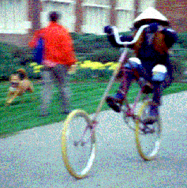
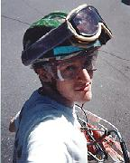
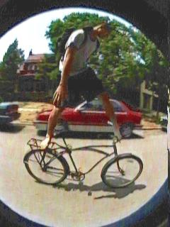
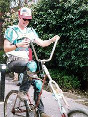
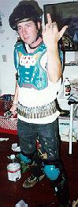
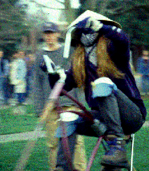

Once one has hacked one's chopper, one will be pleased to acquire the proper gear. Gear makes one stronger, more powerful, better protected, faster, slower, drunker. Gear may be scoffed at, but the simple truth is that gear is a useful tool for domination.
Experiment: the subject joined a touch football game in which the subject wore a bicycle helmet (and no other gear other than the standard shoes, clothes, and bellyfull of beer), while the head of every other player was bare. Results: the subject dominated so very well that the other players would not let him play unless the helmet was removed.
Observation: a pair of roller-blading tykes jumping off of a set of stairs, wearing helmets, elbow and knee pads, and those nifty wrist braces. Upon the frequent act of wiping out, they laughed, got up again, and proceeded anew. Note how the act of crashing becomes enjoyable with the proper gear!

The corporate slimelordz of America have fixated upon gear as an easy method of sponging money from yuppies and yuppy wannabes. "Mountain" bikers and rollerbladers are the key dupes of this movement. They purchase gear because they like to purchase things. They can be identified by their use of "high performance" gear, flashy gear where a high priority is placed on looks, and gear upon which is emblazoned an advertisement for a company (thus announcing the amount of money wasted in its purchase). Such dupes also enjoy scoffing at those without the same gear as they.
These people have, of course, missed the point. They perform the act to don the gear, rather than donning the gear to perform the act. They feel that gear bestows prowess, when in truth it merely allows prowess to be better expressed.
|
At the other end of the spectrum are the no-gear fanatics. They sneer at any kind of gear, claiming that it reveals a certain wimpiness in those who wear it. These people do not realize that gear allows one to fuck shit up, and in turn get one's shit fucked up, with impunity. Neither do they see that gear does not imply a fear of wiping, but rather an embracing of the act, a willingness to meet the event and, most importantly, to continue afterwards. The foolishness of the no-gear position is made clear when one examines the greatest, most prominent article of natural gear bestowed by the Creator upon each member of the human race: the padded ass. Not once has a gear-sneerer used liposuction to effect the denial of this fundamental gear item. |
 |
| Fuck that! Butterboy can bike-surf barefoot becuase he's a badass. |
|  | John Krack is the most stylish gentleman to be found around these parts. He acquired his armor when he was a Forest Service 4-wheel-drive ambulance med-tech who scraped up a lot of crashed motocrossers. |  |
The best gear, is, of course, that gear which one feels comfortable thrashing in. While fake-thrashing one's gear beforehand is the act of the poseur, gear that has been thrashed and is still sturdy is gear that can thrash again.
Needless to say, gear should be as strong and as cheap as possible. The cheapest gear is gear that is scrounged or jerry-rigged for the purpose at hand. In fact, there is no real reason to go gearless, as many elements of the gear ensemble can be constructed with the ubiquitous duct tape and baling wire. An ordinary shirt and pair of trousers of which the joints have been carefully padded with generous layers of duct-tape will allow one to embrace the pavement at high speeds. That worn-out old pair of shoes, when combined with an integrated brace of blown tire and inner tube shinguards, becomes a mighty pair of shitkickers.
Rising from the homebrew gear kit, we have the refunctionalized gear, gear which has either been adapted to its purpose or which would normally be retired. The majority of headwear fits this category. Garage-sale bicycle and motorcycle helmets, football, army, and construction helmets, and even Viking helmets with added straps have served to encourage dwindling collections of brain cells to retain their coherent mass. Ski or aviator gogs with a handkerchief taped to the bottom protect the sensitive face when diving (or being thrown) through plate glass windows. Boxing gloves, however, are discouraged for activities which require the use of fingers.
Finally, let us not forget that gear which is meant to be used after the act which it is made for, as opposed to during. A bottle of whiskey and a needle and thread make a swell first-aid kit - and remember, superglue was invented during the Vietnam war to suture wounds. A pump and a patch kit, as well as assorted parts, helps ensure that one will not be walking home. A wrench will tighten bolts that have worked loose, as well as drive off bands of mutants.

(Return to C.H.U.N.K. Technical Documentation)
| Copyright 2003 Megulon Five <megulon5@dclxvi.org>. |
|
This work is licensed under a Creative Commons License. | Last modified 12 September 1997. |